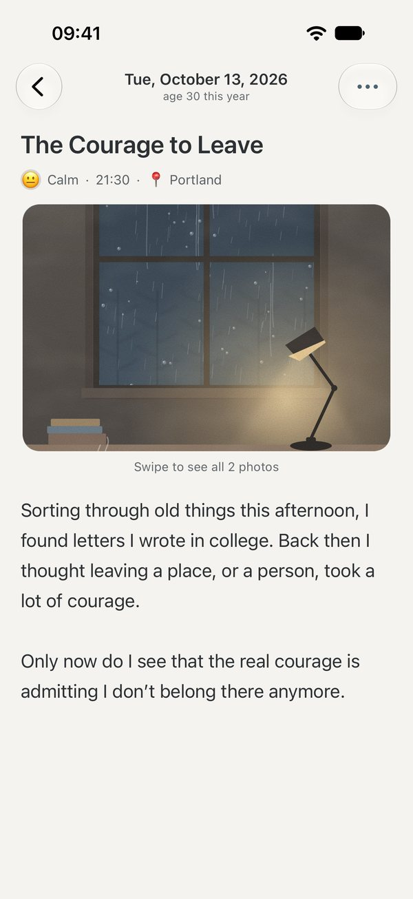
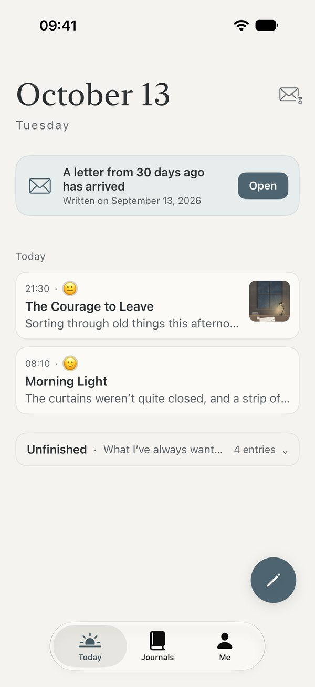
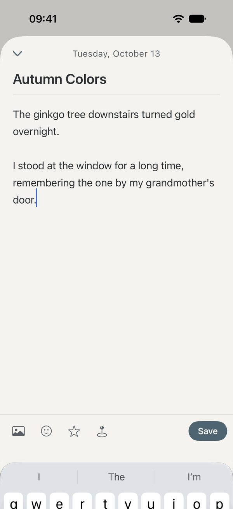
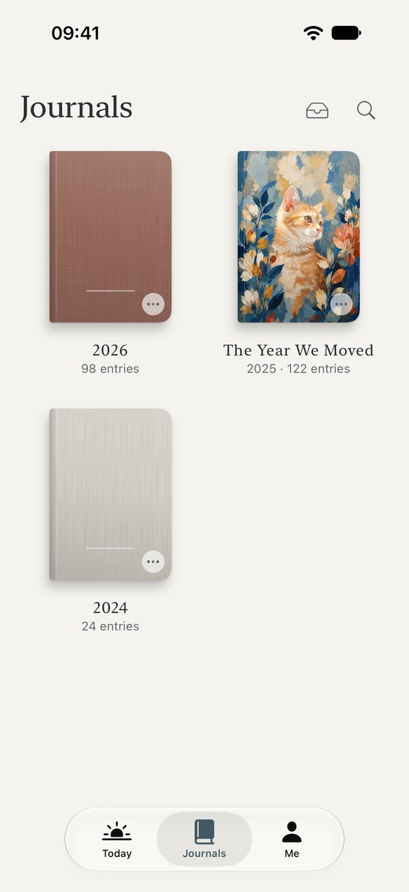
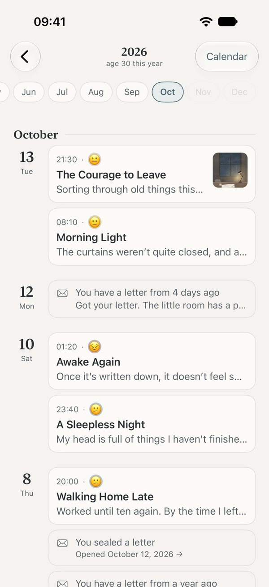
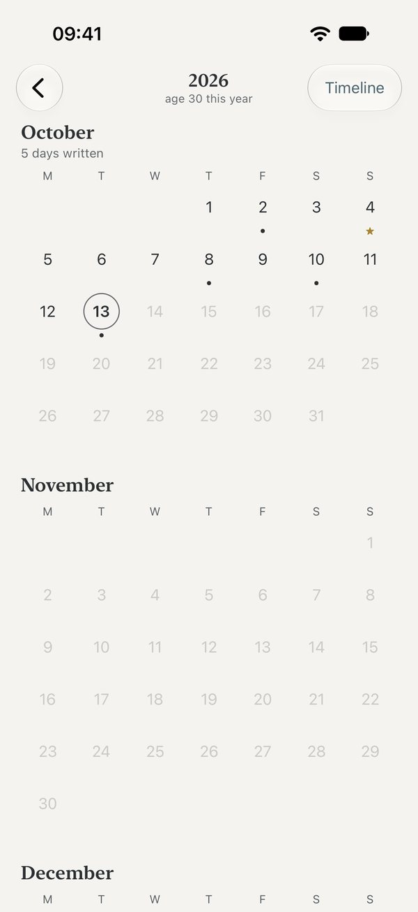
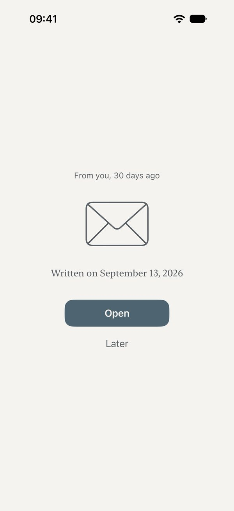
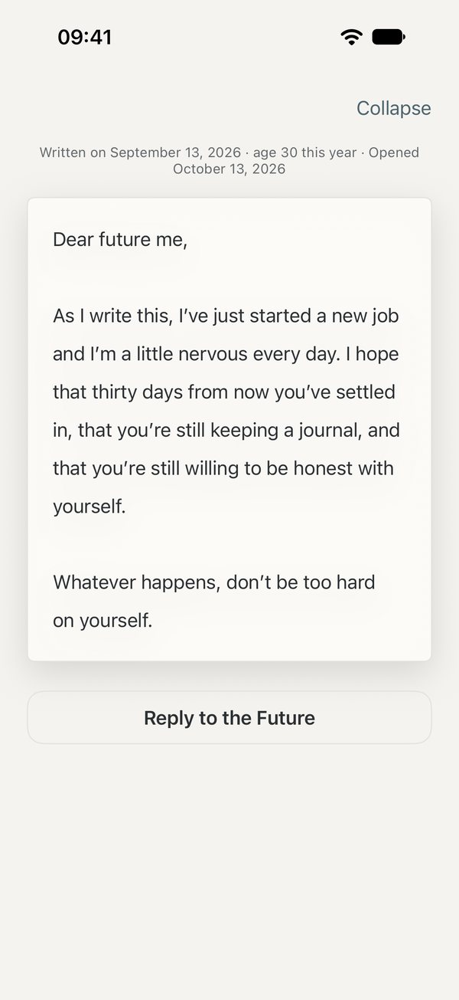
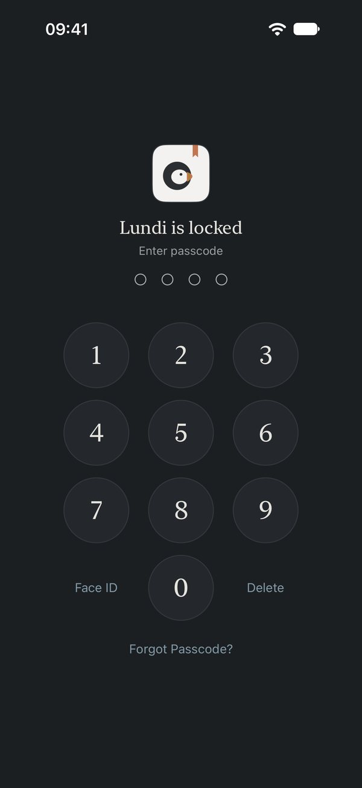

Private · Secure · Quiet
Write quietly.
Write what's true.
No account, no streaks, and no one watching.
Every word you write is stored only on your iPhone and in your own iCloud.
Free to download · iPhone · iOS 17 or later


Write quietly
Open it and start writing
Today's date, a short prompt, and below it, a blank page. Add a mood, a photo or the city you're in if you like, or just write a few lines. Nothing gets lost if you stop halfway; it will be there when you come back.

Keep
A year, a book
Each year's entries are gathered into a book of their own. Give it a name, choose a cover, pick a paper you like. A few years from now, your bookshelf will hold the days you've lived.



Each year, choose a cover you love
Look back
Return to any day
Read entry by entry along the Timeline, or tap a day on the full-year Calendar. Looking for something in particular? A quick search takes you there.


Time capsule
Write to your future self
Write a letter to your future self and choose the day it opens. Until then, it stays sealed and no one can read it. When the day comes, Lundi gently lets you know. After reading, you can write a reply and send it further into the future.


Private and secure
Just for you
App Lock, Journal Lock and Letterbox Lock, opened with Face ID or a passcode.
When Lundi goes to the background, it covers the screen, so your entries don't show in the app switcher.
Your entries live only on your iPhone and in your own iCloud. We can't see any of it.
No advertising, analytics or tracking tools, and no record of what you do in the app.

Take it with you, anytime
Your journal is always yours
An open, widely used format (.zip). Restore everything on a new phone or in another app.
Export each entry as a text file you can open anywhere.
Laid out like a book, ready to print and bind.
Moving in is easy too: Markdown, plain text and export files from common journaling apps are supported.
Our Promise
- We can't see your journalNo account, no servers
- No ads, no selling dataAnd no tracking of what you do in the app
- Your journal is always yoursTake all of it with you, anytime
- No rushing, no streaksCome back after a long while, and it's still here